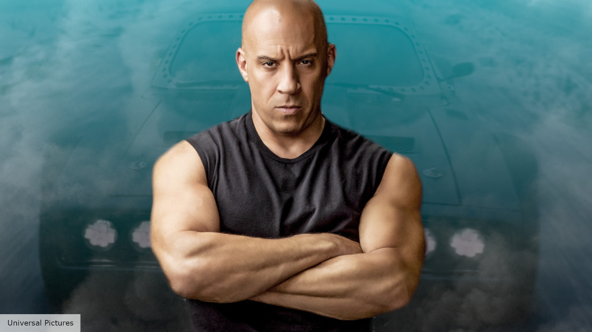
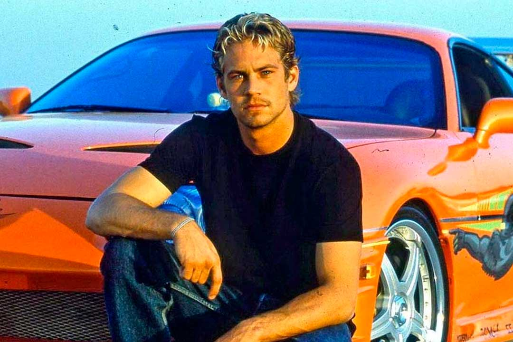
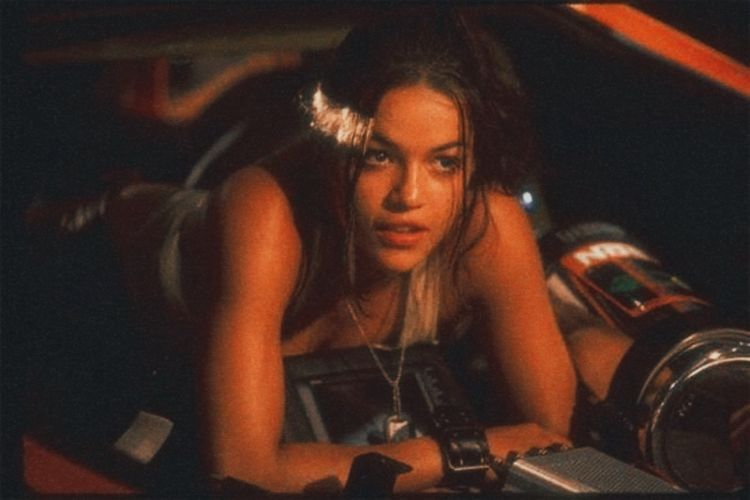
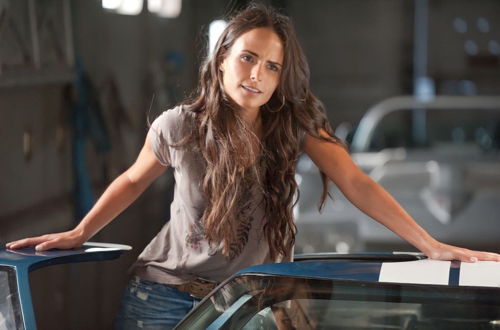
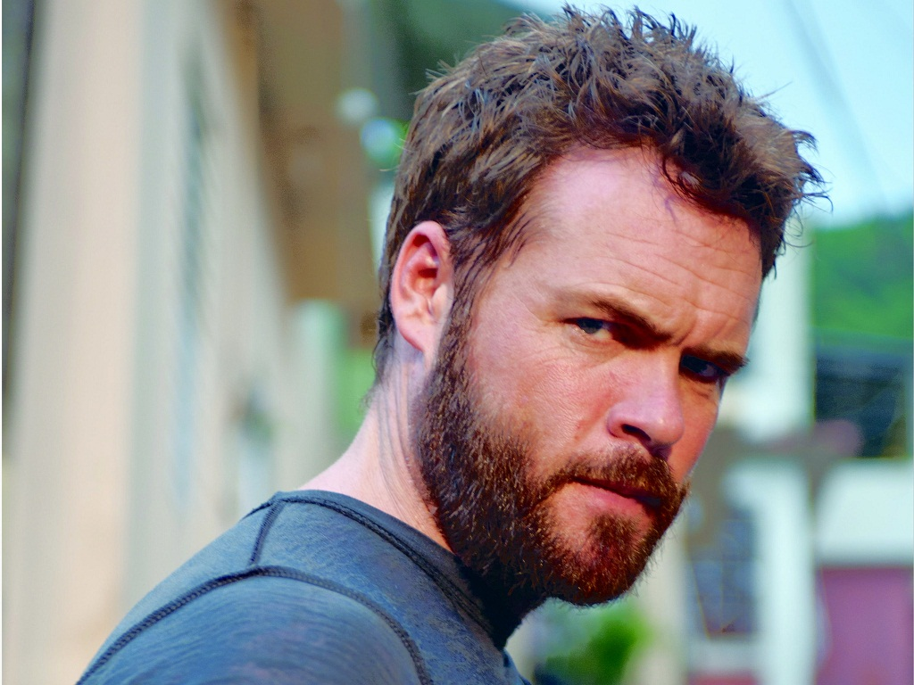
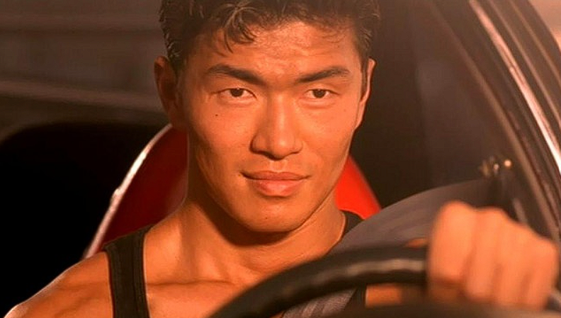
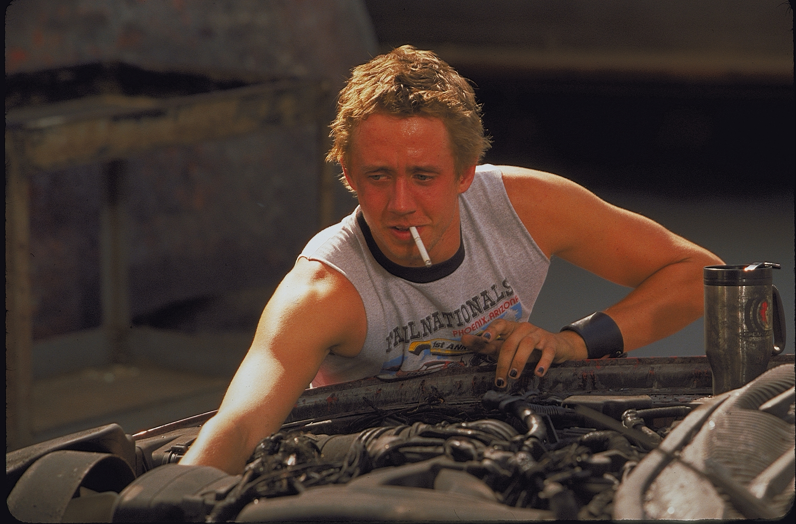
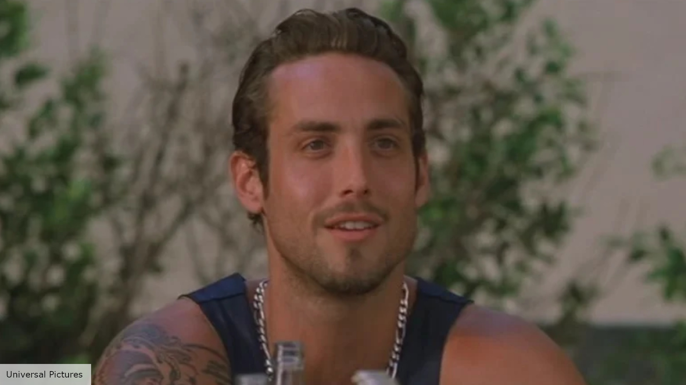

Actores Principales

Vin Diesel - Dominic "Dom" Toretto
Es el líder indiscutible del grupo y una leyenda en las carreras callejeras de Los Ángeles. Dom vive su vida "un cuarto de milla a la vez" y se rige por un código de lealtad inquebrantable hacia su familia y amigos. Es un mecánico experto y el piloto del imponente Dodge Charger de su padre.

Paul Walker – Brian O'Conner
Un oficial de policía del LAPD que se infiltra en el mundo del tuning para resolver una serie de robos. Sin embargo, su pasión por la velocidad y el respeto que empieza a sentir por Dom lo ponen en una encrucijada entre su deber profesional y sus sentimientos personales.

Michelle Rodriguez – Letty Ortiz
Novia de la infancia de Dom y una conductora con una habilidad feroz. Es ruda, directa y extremadamente protectora con su equipo. No solo corre, sino que también participa activamente en la mecánica y la planificación de los movimientos del grupo.

Jordana Brewster – Mia Toretto
La hermana menor de Dom. Aunque conoce las actividades ilegales de su hermano, ella prefiere mantenerse al margen de los robos. Es el interés amoroso de Brian y representa el lado más humano y estable de la familia Toretto.

Matt Schulze – Vince
El mejor amigo de Dom desde la infancia. Es el miembro más explosivo y protector del equipo. Desde el primer momento sospecha de Brian y compite con él por la atención de Mia, lo que genera una tensión constante en el grupo.

Rick Yune – Johnny Tran
El líder de una banda rival con sede en Little Tokyo. Es un tipo peligroso, adinerado y con un rencor profundo hacia Dom. Su conflicto con los Toretto escala hasta convertirse en la amenaza principal de la película.

Chad Lindberg – Jesse
El genio técnico del equipo. Aunque sufre de TDAH, su cerebro es una computadora para la logística y la optimización de motores. Es el encargado de diseñar los sistemas de inyección de nitro y mapear las rutas de escape.

Johnny Strong – Leon
Actúa como el vigía o "despachador" del grupo. Su trabajo es monitorear las frecuencias policiales y asegurar que las carreras o los atracos se realicen sin interrupciones. Es el miembro más reservado y tranquilo del equipo.